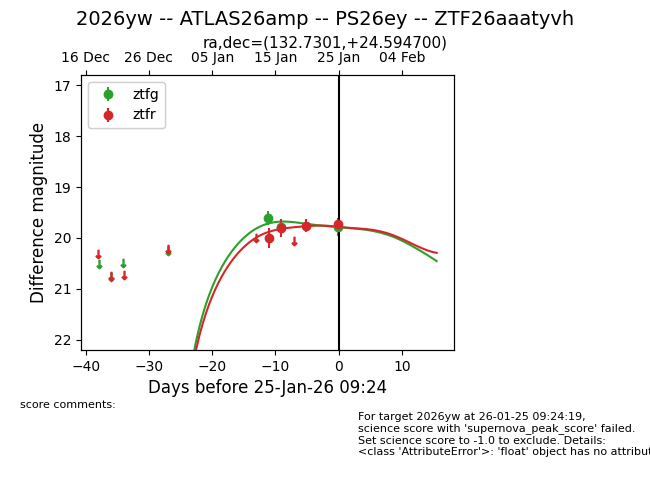
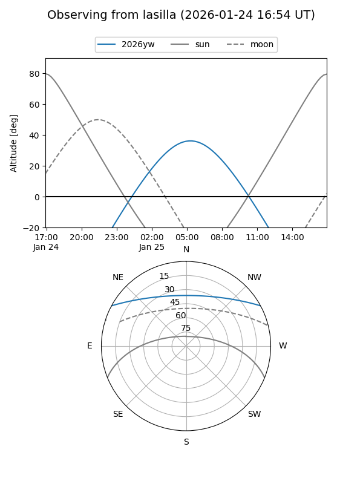
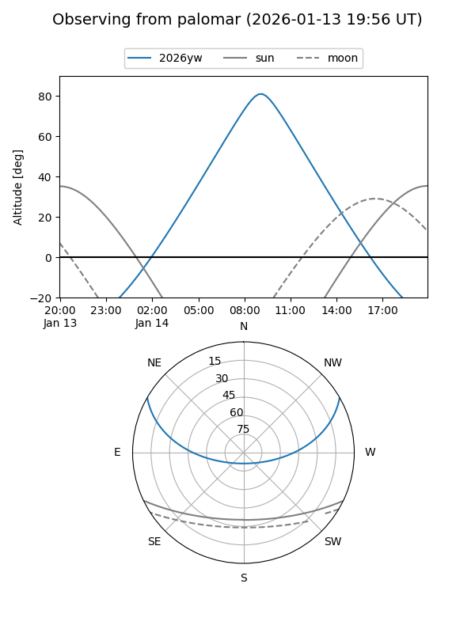
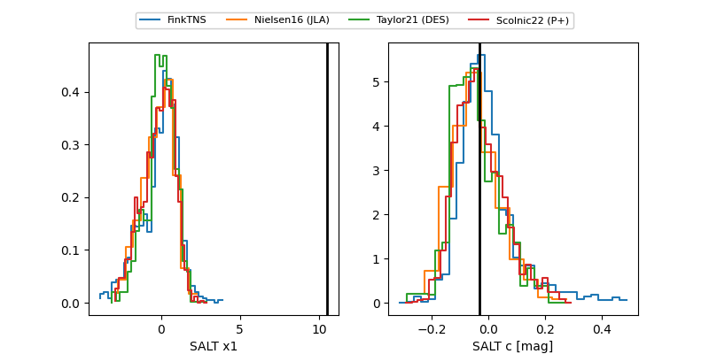

2026yw
Target 2026yw at 2026-01-25 07:16
Aliases and brokers:
FINK: link
Lasair: link
ALeRCE: link
TNS: link
YSE: link
alt names
ZTF26aaatyvh (ztf,fink_ztf)
2026yw (tns,yse)
PS26ey (panstarrs)
ATLAS26amp (atlas)
Coordinates:
equatorial (ra, dec) = 132.7301,+24.59470
equatorial (HMS+DMS) = 08:50:55.21,+24:35:40.92
galactic (l, b) = (201.1882,+36.35714)
Flags:
Photometry:
last ztfg=19.79, ztfr=19.76
3 ztfg, 3 ztfr detections
Lightcurve

Visibility


Additional plots
